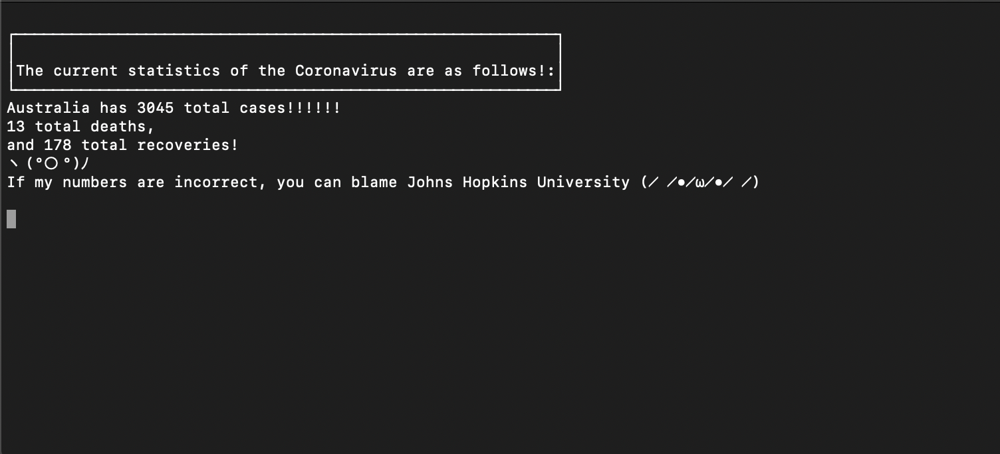
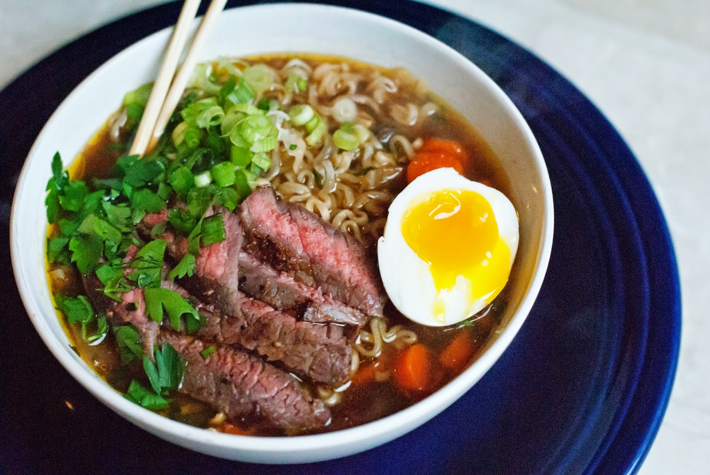

Hackathon!
March 26, 2020
Today myself and 2 of my co-horts teamed up in our first ever Ruby hackathon event at Coder Academy.
The class was given the theme of isolation (appropriate for our current predicament, re: covid-19)
early in the day, assigned into groups and sent on our way! We brainstormed and landed on the idea
of a companion application to keep you company during your isolation, lift your spirits, keep you fit,
and provide updates on the Coronavirus situation.
After smashing out code for hours on end, our team manage to scrape together a fairly functional program!
I implemented a COVID statistics API and grabbed information about Australias current cases, deaths and
recoveries, fed it into the program, parsed it from JSON to Ruby and returned it in an easy to read format.
Once that was functioning correctly I whipped up some dialog, menu prompts/selectors and worked in the modules
that my team mates created. It was a fun experience, and definitely different from working solo. Overall I think
a good time was had by all, and the whole class managed to put out some really neat programs.

Supercharged Instant Ramen
March 25, 2020
Today I have probably the greatest tip for any lazy cook, student, workaholic and general busybody. A surefire way to make an extremely tasty meal, impress a date, nourish a family or just treat yourself!
How to make a legitimately impressive, full-bodied ramen, using instant noodles:
- Buy some of your favourite instant ramen (I used Nongshim Shin Ramyun for some spicy kick)
- Pick up some meat of your liking, I went with a nice cut of beef
- Grab some greens (Spinach, snow peas, green onion) and some eggs if you dont have any
Once you've got the ingredients, prep is simple. Start by filling a small/medium sized pot about 1/2 full with water, get it on a hotplate and let it come to a boil while you do the following. Cube your meat and throw it into a HOT frypan, browning it on all sides (try not to murder it and turn it into leather).
Once its browned, add in a good splash of soy sauce, teriyaki sauce and some sake (these were my sauce choices which turned out great, use whatever you have in your kitchen). Reduce the heat down to low and let the sauces bubble and soak into the meat. While thats getting all saucy and delicious,
set up your bowls with the dry ramen noodles, and throw in your flavour packets (I left the sad looking vegetable packet out, as we are adding some nice veggies ourselves).
Chop up as much green onion as you'd like
(I was only using it as a garnish), chop the ends of your snow peas, and have your spinach at the ready. By this point your water should have come to a boil, throw in as many eggs as you'd like, I did one per person.
Let them cook for 5-7 minutes depending on the amount of eggs (7 was good for 3 eggs), use this time to start the kettle boiling enough water to cover your noodles in their bowls! When your minutes are up, pull your eggs out and put them into a bowl of cold water to halt
the cooking (this should give you nice soft centered eggs!). While they are cooling, fill your bowls with the freshly boiled water, let your noodles soften in the flavoured water. Tuck in a handful of spinach under your noodles,
throw in your snowpeas, add your meat on one side of your bowl, peel your eggs, slice in half and position nicely in your bowl. Sprinkle on your green onion and serve!! Once practiced this should take about 30 minutes. Not bad for a pretty tasty meal for multiple people!

Conference Calls
March 23, 2020
It's monday, and the first day of our online learning platfrom for Fullstack Web Development. So far, not bad! Runs pretty smooth, I really thought my dirt-tier internet wouldn't be able to keep up but hey, surprise surprise. A conference with 33 other people is slightly manic, but it is what it is. It certainly is nice to be only steps away from food, drinks and a bathroom in the privacy of my own house. I'm still tossing up whether to stay in the city, or go back home to dads to avoid the hysteria that we are experiencing with all this virus nonsense going about. Will report back later.
I have really kicked into gear on the progress of my portfolio project. I am going for a bit of a minimalist style, but I'm going to try to make it really polished, and nicely responsive for both desktop and mobile devices. Hoping to incorporate a bit of JS for some cool features, we'll see how that goes.
Covid-19 and the free days off.
March 18, 2020
So the world's kind of falling apart, that's pretty cool. I should be in class right now but instead I, and all my class-mates, have the rest of the week off to hang out at home, sleep, get baked, or potentially try to do some study. No arguments here, although I do hope it doesn't hurt our momentum in class. I decided to spend the day smoking some mild weed and learning a new programming language, which went great until lunch time, and then I just wanted to binge a new TV show and browse reddit. Did I do it? You'll never know...
Been thinking of joining up to a bouldering gym as my new form of physical activity. The gym has become too repetitive and I feel like starting to climb would be the perfect mix of problem-solving and exersize. Its proving difficult to find a gym in an appropriate location, but It'll probably be easier to reach when I get my own flat, Ill just have to deal with the commute for now. I shall report back with my verdict whenever I sign up.
This is the first post!
March 15, 2020
Welcome to the first post of my official blog! FULL DISCLAIMER: this is gonna get weird! I'm making this blog for a project at the web development bootcamp I am a part of, Coder Academy! It's not going to be strictly coding related, more just random thoughts that pop into my head and I feel like typing out. Updates on life, exsistential questions, recipes for a good meal, you name it, it might pop up here!
So far the course has been great, although I am still adjusting to the "city" life. A lot of people, always noisey, I do miss the peace and quiet of home. And the fresh air. But hey, the people are cool, there's plenty to do, and I get to finally be apart of something I love, a team of coders! Hopefully you find some of the content on this blog interesting. If not, look I dont blame you, but its for me not you so who cares!